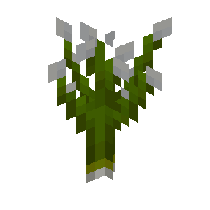

About
The wild green onions block is a plant that generates in flower forest biomes.
Config
Wild Green Onions are enabled and disabled with the same config option as Green Onion Seeds. Visit the Green onion seeds page to read more about it.
Natural generation
Wild green onions can be found in both vanilla and modded flower forest biomes on land.
Breaking
Breaking a wild green onion plant by hand drops 1 to 4 green onion seeds. Using shears drops the plant block itself instead.
Placing
Wild green onions can be placed on any grass block.
Wild green onions

| Renewable | No |
| Stackable | Yes (64) |
| Tool | Any tool |
| Blast Resistance | 0 |
| Hardness | 0 |
| Luminous | No |
| Transparent | No |
| Catches fire from lava | No |